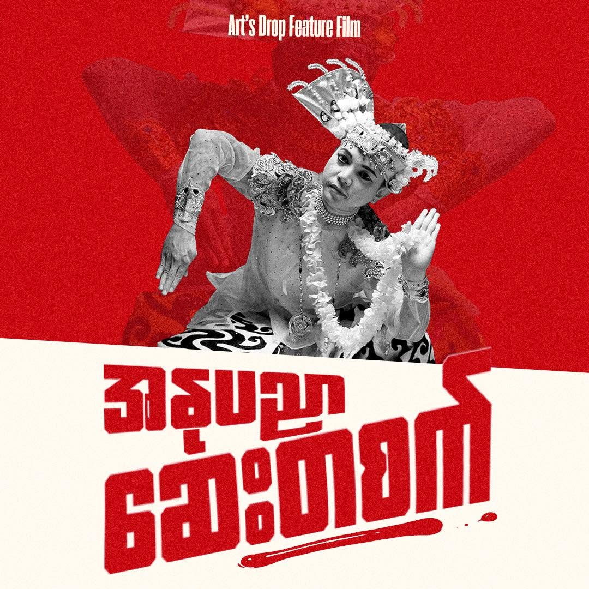
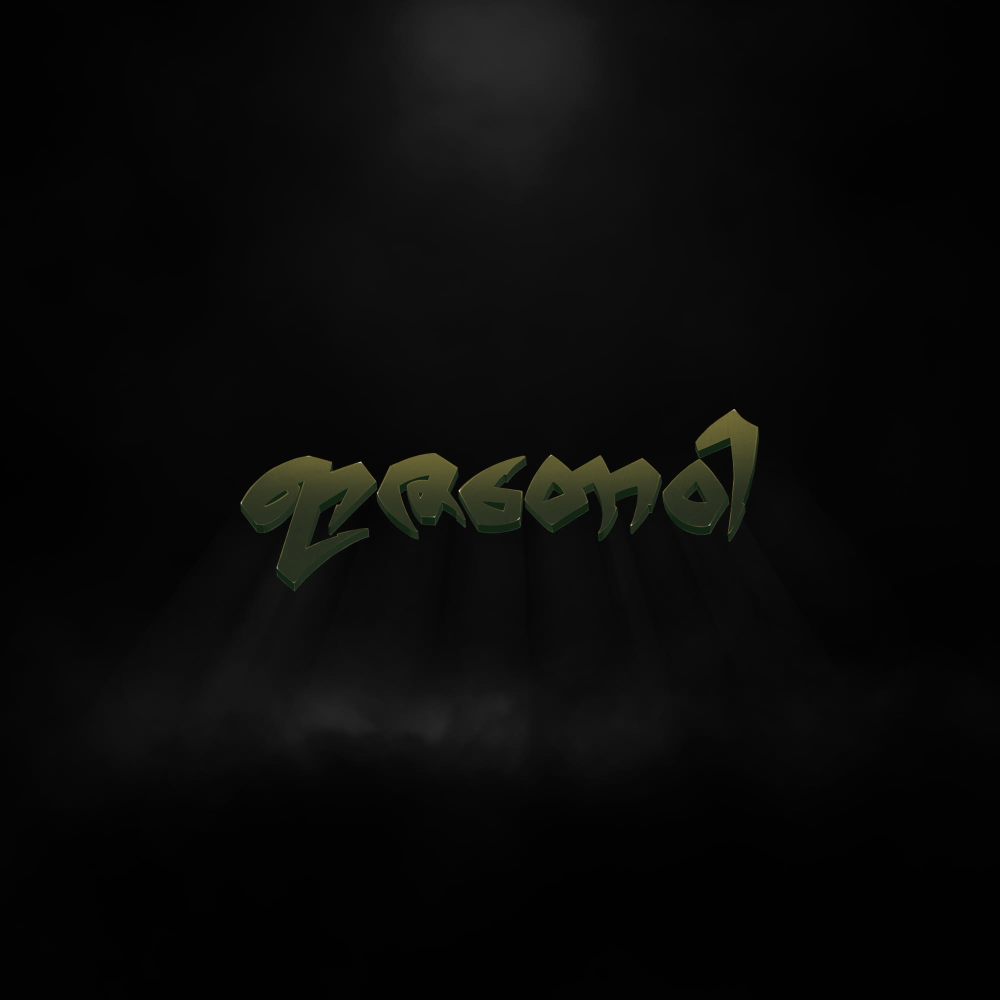
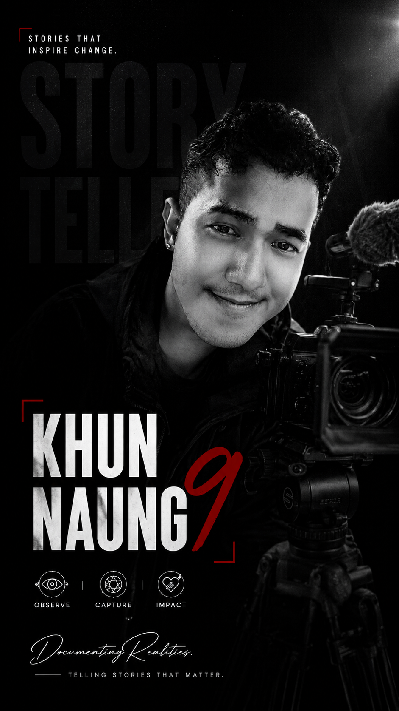

FEATURED WORK
Selected Projects


Documenting real stories through creative content, photography, videography, and documentary filmmaking.
ဇာတ်လမ်းတိုင်းမှာ တန်ဖိုးရှိပါတယ်။ အဲဒီဇာတ်လမ်းတွေကို ဓာတ်ပုံ၊ ဗီဒီယိုနဲ့ မှတ်တမ်းရုပ်ရှင်တွေအဖြစ် ပြောင်းလဲပြီး လူတွေဆီ ရောက်အောင် တင်ဆက်ဖို့ ကျွန်တော် ကြိုးစားနေပါတယ်။

I am a content creator and documentary filmmaker based in Mae Sot, Thailand.
ကျွန်တော်က ထိုင်းနိုင်ငံ၊ မဲဆောက်မြို့မှာ နေထိုင်တဲ့ Content Creator နဲ့ Documentary Filmmaker တစ်ယောက်ပါ။
I specialize in photography, videography, editing, and documentary storytelling, creating authentic visual content that captures real people, meaningful moments, and stories that leave a lasting impact.
ဓာတ်ပုံရိုက်ကူးခြင်း၊ ဗီဒီယိုရိုက်ကူးခြင်း၊ တည်းဖြတ်ခြင်းနဲ့ မှတ်တမ်းရုပ်ရှင် ဇာတ်လမ်းဖန်တီးခြင်းတွေကို အဓိကလုပ်ကိုင်ပါတယ်။ လူတွေရဲ့ တကယ့်ဘဝ၊ အဓိပ္ပာယ်ရှိတဲ့ အခိုက်အတန့်တွေနဲ့ အချိန်ကြာကြာ အမှတ်ရစေမယ့် ဇာတ်လမ်းတွေကို Visual Content အဖြစ် ဖန်တီးတင်ဆက်နေပါတယ်။
Watch selected scenes from documentaries, commercials and short films.




Began studying Film and Drama at the National University of Arts and Culture (Yangon).
အမျိုးသား အနုပညာနှင့် ယဉ်ကျေးမှု တက္ကသိုလ် (ရန်ကုန်) တွင် ရုပ်ရှင်နှင့် ပြဇာတ်ပညာကို စတင်လေ့လာခဲ့သည်။
Joined the Civil Disobedience Movement (CDM) and continued documenting real stories through independent filmmaking.
CDM တွင် ပါဝင်ခဲ့ပြီး လွတ်လပ်သော မှတ်တမ်းရုပ်ရှင်များမှတစ်ဆင့် စစ်မှန်သော ဇာတ်လမ်းများကို ဆက်လက်မှတ်တမ်းတင်ခဲ့သည်။
Started working on independent documentary films and visual storytelling projects.
လွတ်လပ်သော မှတ်တမ်းရုပ်ရှင်များနှင့် Visual Storytelling Project များကို စတင်ဖန်တီးခဲ့သည်။
Creating documentary films and visual content while expanding my experience in storytelling and media production.
လက်ရှိတွင် မှတ်တမ်းရုပ်ရှင်များနှင့် Visual Content များကို ဖန်တီးရင်း Storytelling နှင့် Media Production အတွေ့အကြုံများကို ဆက်လက်တိုးချဲ့လျက်ရှိသည်။
If you have a documentary, commercial or creative project, let's work together.